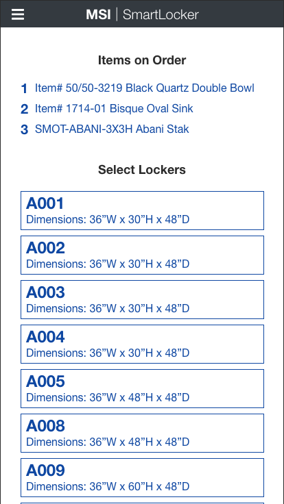
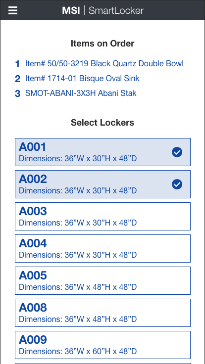
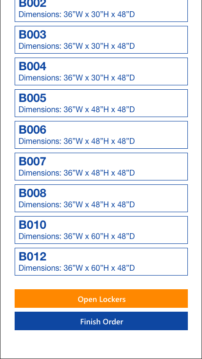

SmartLocker
A software designed to store and pickup products in lockers. Employees store the products, and customers are emailed with a QR Code that unlocks the locker.
Employee Side
Employees bring the order to the SmartLocker location. The employees use a company issued iPhone. Scanning the QR code is the quickest method, but in case the scanner is having issues, there is also an option to manually type in the code.
A list of items on the order is provided at the top of the page. The available lockers are shown below, along with the locker size dimensions. If the items on the order are too large, multiple lockers can be selected. Once the lockers have been selected, the user can press the 'Open Lockers' button and place the items inside. If more lockers or less lockers are required, the selections can be edited.



Modal messages popup after certain actions. A message alerting that the lockers have been opened, which also includes a reminder to fully close the locker when finished. A message also appears after pressing 'Finish Order'. This will have the user be sure that all items have been placed in the lockers selected.


The final screen. Gives the user the confirmation, and also another reminder to be sure that the lockers have been closed. There are prompts to return to the home screen, or if a mistake was made on that order they can make an adjustment.

Customer Side
Now that the items have been placed in the locker, the data is sent to the backend where an automated email is processed and sent to the customer. A tablet is mounted to the lockers unit. The customer can use the QR code or manually type in the Pickup Code.


After the code has been accepted, the lockers will automatically open. Arrows help assist in showing the location of the lockers. The customer collects the items and marks them as collected by tapping the screen. Once every item has been checked, the 'All Items Picked' button will be enabled.


If the customer is having trouble they can press the 'Need Assistance' button at any time. Whether they can't find their order email, the locker is empty, the locker is not opening, etc. The department will be notified to send an associate over to help.

After tapping the 'All Items Picked' button, this message will appear and a confirmation email will be sent to both the MSI department, and the customer.